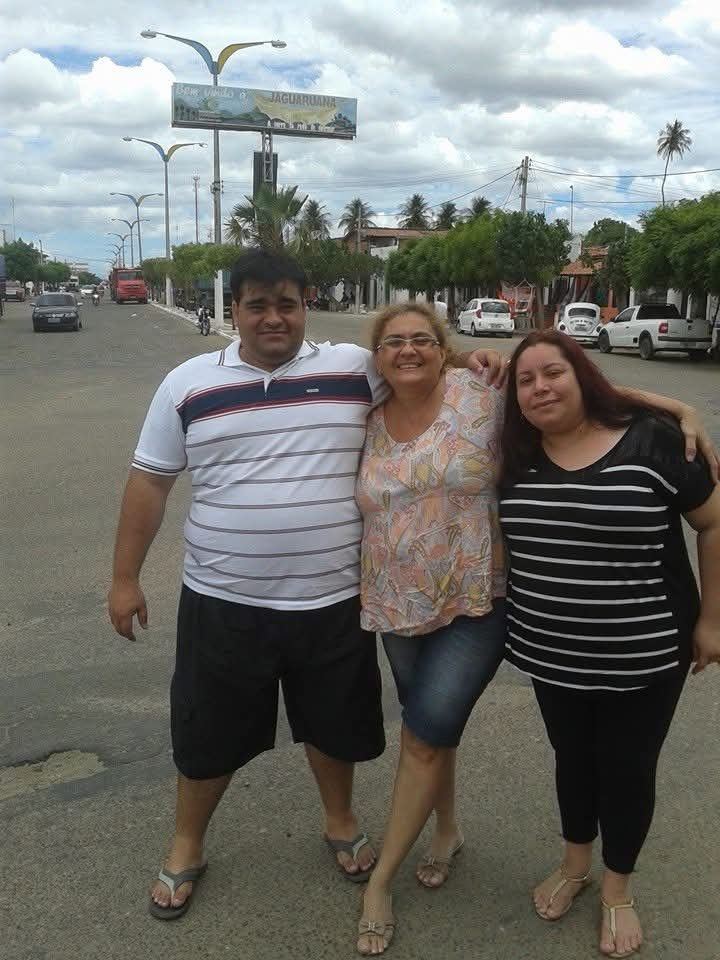
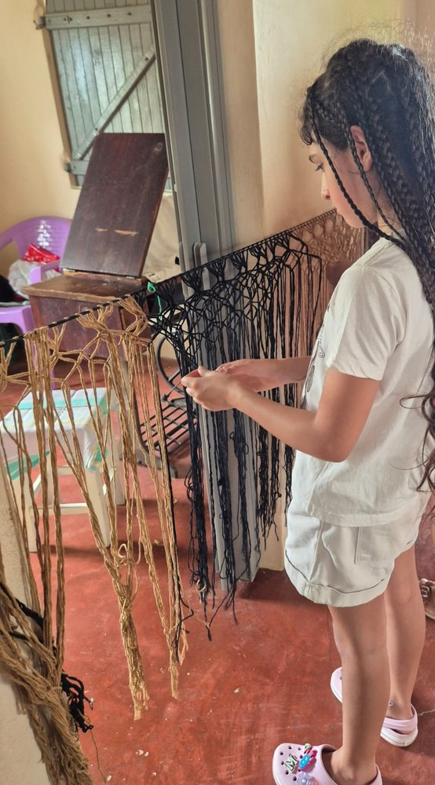

Em construção. Esta fase será ampliada à medida que Luciana gravar novos relatos.
A primeira volta a Jaguaruana foi uma viagem pensada para os outros. Luciana levou a mãe, Albertina, e a tia Socorro para reverem o lugar onde nasceram e reencontrarem o irmão, João, depois de mais de quarenta anos de separação. A tia Socorro morreria pouco tempo depois. Havia outras escolhas a fazer, diz Luciana, mas a dela era fazer todos felizes.
Ela própria não guardava lembranças do lugar, que deixara muito pequena. Antes da entrada da cidade, uma placa anunciava: Terra da Rede de Dormir. Saber que vinha dali teve para ela grande importância.

Três anos depois, Luciana foi atrás do pai, Gedeão, e o encontrou com saúde, em Fortaleza. Ganhou uma nova família no Ceará, com irmãos, sobrinhos, tios e primos, que se tornaram também família dos irmãos de Boa Vista. Passou a ter em seu nome o sobrenome Lucena, do pai. É, nas palavras dela, uma história para contar depois, devagarzinho.
Na mesma época, levou os filhos para conhecer o lugar de onde viera, junto com parentes de Fortaleza e de Boa Vista. Ao pisar de novo naquele chão e ver onde ficava a casinha da família, reencontrou suas raízes. Desde então, volta todos os anos, e já levou quase toda a família, para que todos conheçam a terra de onde veio a bisavó. Muitos hoje voltam por conta própria.
Ao caminhar por Jaguaruana, Luciana diz ver a avó em cada canto: na entrada da cidade, segurando a mão de uma menina chamada Luciana; à beira do rio onde as mulheres da família lavavam roupa. Um primo, Dude, resumiu o sentimento numa frase que ela repete: “Eu saí do sertão, mas o sertão não saiu de mim.” Se pudesse escolher, ela diz, moraria lá e em Roraima ao mesmo tempo.

Em casa, a bisneta Mariah tenta ensinar a bisavó Albertina a ler. Luciana se diverte com a cena e responde por ela: “Não dá mais, minha filha, a vovó já está cansada.”
Em 2018, como acadêmica de Psicologia da Universidade Federal de Roraima, escreveu o conto autobiográfico O que eu conto de mim, ponto de partida desta biografia. Hoje é avó de três netos: Mariah, a primeira, e Henrique e Isabela, filhos de Raphael. Às vésperas do Dia das Crianças de 2026, chorou numa loja comprando brinquedos para a criançada da família, lembrando dos pedaços de brinquedo que ganhava na infância e da alegria de agora poder dar.
Na sua vida há ainda a prima Leda, a Tetê, que ela chama de anjo protetor. Depois do amor de Deus, diz Luciana, o da Tetê é a maior prova de amor que recebeu. A fé atravessa todo o seu relato: ela atribui a Deus cada sonho realizado e diz que ainda tem muitos por realizar.